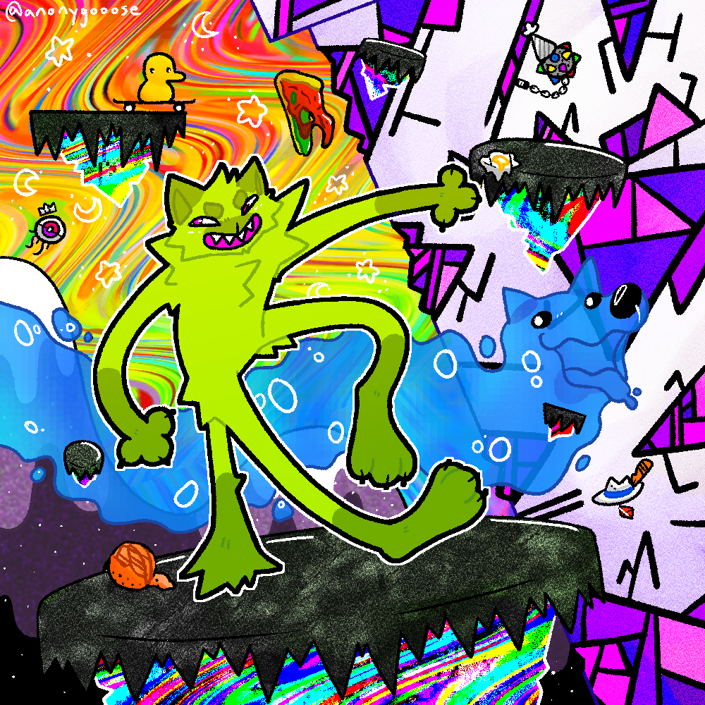
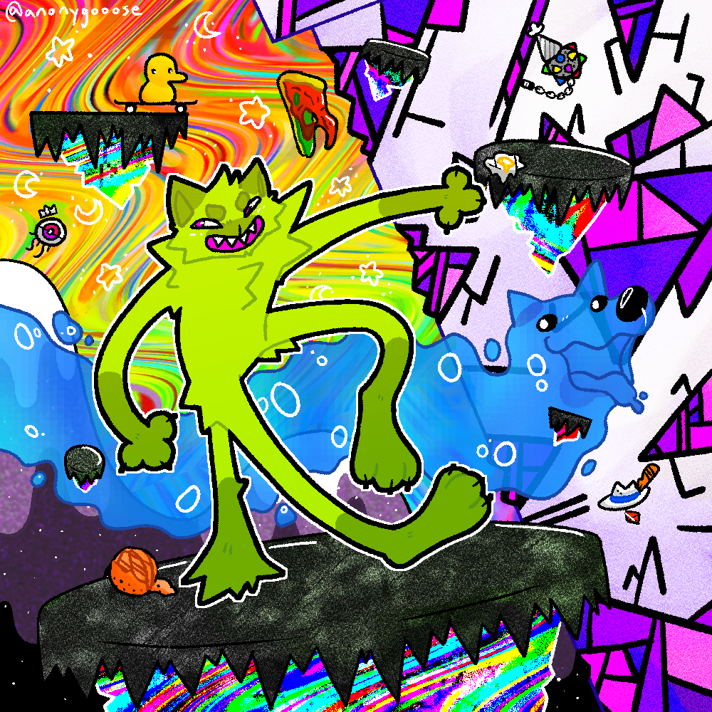

Dragonfly 44
2018 - Present
MAJOR WIP
You are a detective working for an intergalactic agency, trying to solve cases for beings across the universe. On your first solo case, you discover it's not as simple as it was written out to be, and end up falling deeper and deeper into a larger situation found within Dragonfly 44.


Since the game is so early in development, any ideas or details may change completely! I am still personally debating between a 2D/2.5D style. The game will be a detective psychological-horror game that takes in place in the galaxy it's named after, being a dark-matter twin of the Milky Way.
A Surreal Experience
2020 - Present
MAJOR WIP
You follow Player, an innocent puppet placed in a world built just for them. You'll uncover the secrets of this universe, meet friends (and even better enemies), and uncover the purpose of Player's whole existence. You will be guided by Character, one of the many overseers that exist within this universe. You will be in terrible hands.
Check out the Tumblr page for artwork and updates!


 



This is a game I have been developing for multiple years now. It will be a 3D platformer & action-adventure game. Not too much has been shared to the public quite yet. Some inspirations for this game include: ENA, LITTLE RUNMO, and OFF
Triple Ø
2020 - Present
MAJOR WIP
A horrendous future where the Earth as we know it was completely destroyed environmentally due to nuclear warfare. It's been centuries since the start of the war, however political leaders and the people of their choosing fled to space in order to finish what they started. Some humans fled back to Earth as it slowly recovered, with alien species joining them. This game follows Oleander, a man-made killing machine who escaped to Earth along with a human scientist named Oryn. As Oleander explores the world once known as Earth, they make it their goal to destroy those who created them.


This story is one I've been developing for multiple years now, fleshing it out as time goes on. The game is planned to be an open-world survival fighting game with an overall goal, along with multiple optional side-quests for the player to complete. It's inspired by media such as the Fallout game series, The Elder Scrolls V: Skyrim, along with the show Arcane.